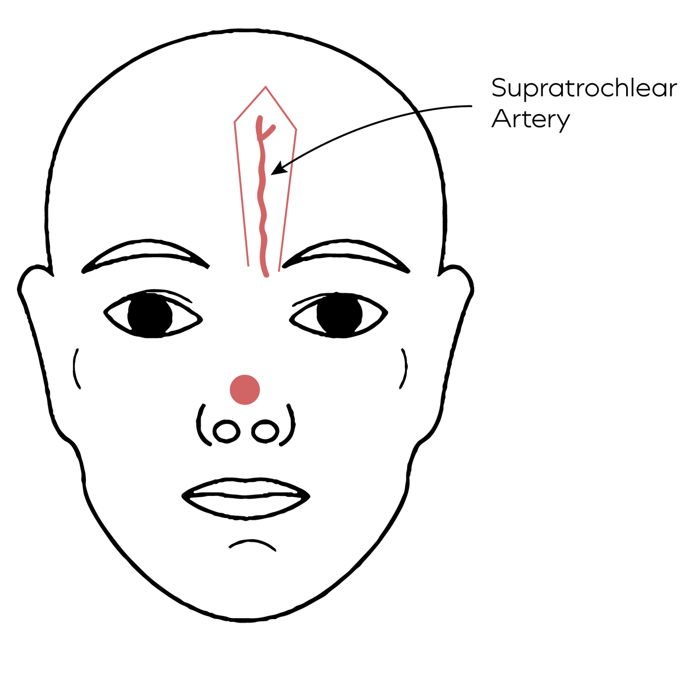

Pre-Operative Considerations
- Consider sebaceous gland density, and tissue thickness - the forehead is typically similar to nose. Typically the flap needs to be thinned appropriately to ensure it matches the contour of the nose
- If the flap is required to be long enough to encompass hair-bearing skin, it must be thinned enough to eliminate hair follicles
- Maintaining the attachment of the frontalis muscle to the flap can be useful if the defect has more depth
- Flaps greater than 4.5cm may be too wide for primary closure of the donor site, in such cases, the superior portion may need to heal by secondary intention
- Contraindications: previous forehead trauma leading to disruption of forehead blood supply, radiation therapy to forehead is a relative contraindication
- For patients who are smokers – consider smoking cessation and consider delayed flap transfer (ie. incise the perimeter first, then complete flap elevation after 3 weeks) 